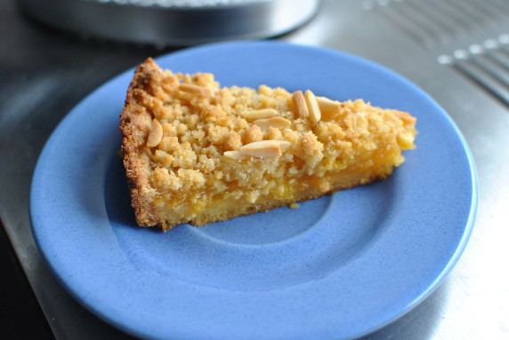

Steffis Apfel-Aprikosen-Kuchen

- Zubereitung: ca. 15 Minuten
- Backzeit: ca. 40 Minuten
- Für 1 Springform (24 cm Durchmesser)
Zutaten
- 250 g Mehl
- 150 g Zucker
- 1/2 Päckchen Backpulver
- 1 Ei
- 75 g Butter, weich
- 1 großes Glas Apfel-Aprikosenmus
- 50 g Mandelstifte
Zubereitung
- Den Boden der Springform mit Backpapier auslegen. Mehl, Backpulver, Zucker, Butter und das Ei mit einer Gabel zu Streuseln rühren. 2/3 der Streusel in die Springform geben, zum Boden formen und einen kleinen Rand hochziehen.
- Für 10 Minuten bei 200° Celsius Umluft in den Backofen geben. Die Apfelmus-Aprikosen-Mischung darauf verteilen.
- Die restlichen Streusel mit den Mandelstiften vermischen und auf die Mischung geben. Für weitere 30 - 40 Minuten backen.